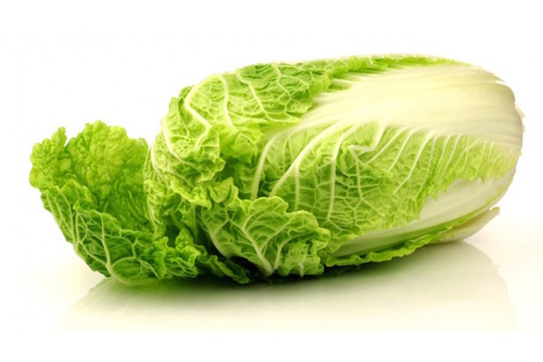
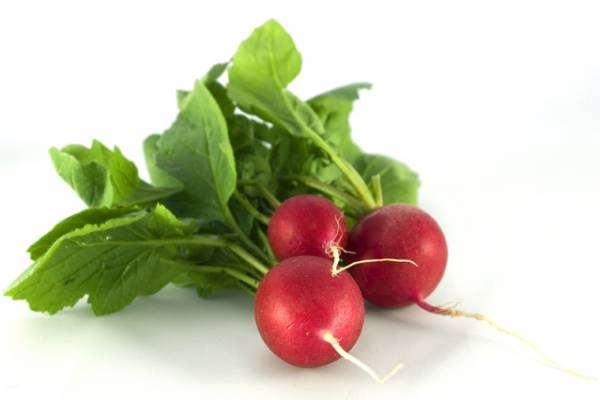
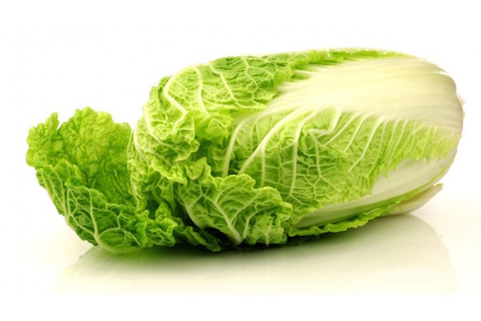
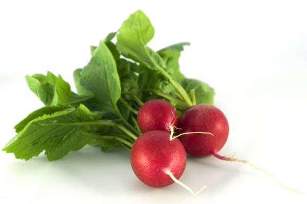

VII Сельскохозяйственная выставка-ярмарка, проходящая с 2010 года
Кукуруза
Кукуруза — южная
сельскохозяйственная культура,
она распространена на Украине, в
Молдавии, в Закавказье и в
некоторых других районах. А,
между тем, она заслуживает того,
чтобы занять значительно большее
место в пищевом рационе
населения центральных районов,
средней полосы, а также Урала и
Сибири.
Салат Айсберг
Салат Айсберг — не совсем типичный
представитель овощей, который
относится к кочанным салатам.
Овощ представляет собой кочан, не очень
плотный, зато имеющий хрустящий вкус.
Листья у растения нежного
зеленого цвета, внешне салат
больше напоминает
белокочанную капусту, так что
нередко покупатели их
путают.
Редис
Редис — съедобное растение
семейства Капустные. В
разговорной речи, в основном,
употребляют название
«редиска». Корнеплоды,
покрытые тонкой кожурой,
достигают в толщину до 3-х см. Острый
вкус корнеплодов обусловлен тем, что в них
есть горчичные масла. Избавиться от
горечи можно при помощи кипятка.
Морковь
Морковь — двулетнее растение,
которое распространено по всему
миру. Появился этот овощ впервые
примерно 4 тыс. лет назад в Юго-Западной
Азии. Изначально морковка была очень
горькой, поэтому ее не
использовали в пищу. При
длительной термообработке овощ
может потерять все свои полезные
вещества.
Груша
Груша — растение семейства
Розовые. Впервые об этих плодах узнали в
Китае, откуда они распространилась
и на другие территории. Груша имеет
форму лампочки и, в общем, плоды
достигают не больше среднего
размера. Спелый фрукт обладает
мягкой и нежной мякотью, которая к
тому же очень сладкая и ароматная.
Яблоки Антоновка
Яблоки «Антоновка» были
выведены путем народной
селекции. Этот сорт пользуется большой
популярностью в странах бывшего
СССР. Отличительной чертой плодов
яблони антоновки обыкновенной
является возможность
длительного хранения.
Дыня
Дыня — растение семейства
Тыквенные. На сегодняшний день найти
плоды в диком виде практически
невозможно. Родиной этого
растения считается Средняя Азия и
Индия. На сегодняшний день дыня
распространена практически по
всей территории с теплым климатом.
Слива
Слива — это темно синий фрукт с приятным
вкусом, который пришел к нам из
Кавказа, Малой Азии и Северного
Ирана. Сейчас этот фрукт распространен во
всех странах с умеренным климатом. Плод
сливы – это овальная ягода , с гладенькой
кожурой и косточкой внутри. Вкус у
фрукта очень сладкий и сочный.
Клубника
Клубника — растение семейства
Розовые. Культивируют ягоды во
многих странах мира. Плоды,
обладающие конической формой,
могут быть разного размера, все
зависит от сорта. В основном, плоды
окрашены в ярко-красный цвет. Сочная
мякоть обладает неповторимым
ароматом и сладким вкусом.
Малина
Малина — растение семейства
Розоцветные. Ягоды-костянки
срастаются на цветоножке сложным
плодом. Малина широко
распространена по всему миру, и она
может расти, как в диком, так и в
окультуренном виде. Кстати, ягоды ,
которые растут в лесу,
выделяются неповторимым
ароматом.
Черная смородина
Черная смородина — кустарник
семейства Камнеломковых. Ягоды
темно-фиолетового цвета
имеют много мелких семечек и
обладают сферической формой. В
среднем они достигают в диаметре
около 1 см. Родиной этого вида
кустарников считается Азия, где они
росли в диком виде.
Земляника
Земляника считается одной из
самых душистых и вкусных лесных ягод,
которая была окультурена еще в 15
веке. Существует довольно много
сортов земляники, однако в наших
садах, как правило, встречается
виргинская, садовая и мускатная
земляника. Ягоды земляники
небольшие, цвет у них нежно-красный, они очень
ароматные и мясистые.
Описание выставки-ярмарки
В этом году VII выставка-ярмарка «Бабуленькин урожай» пройдет с 21 по
28 октября. Ежегодно это событие привлекает сотни деревенских жителей и гостей
города из различных регионов России.
«Бабуленькин урожай» – это смотр достижений в области сельского
хозяйства, производства продовольственных товаров и садоводства, а также прямой
обмен опытом.
Цели выставки-ярмарки:
содействие развитию малых форм хозяйствования (крестьянско-фермерское хозяйство
и личное подсобное хозяйство) через создание площадки для демонстрации,
продвижения и реализации результатов производства и переработки
сельскохозяйственной продукции;
обмен опытом между участниками выставки-ярмарки;
внедрение прогрессивных методов ведения сельскохозяйственного производства;
расширение региональных хозяйственных связей, налаживание деловых контактов и
поиск новых партнеров;

 


